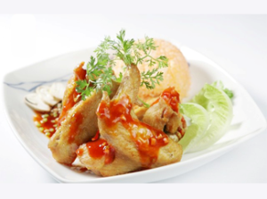

Cánh gà chiên xốt tương Java

- Khẩu phần 6
- Chuẩn bị 10 phút
- Thực hiện 20 phút
Nguyên liệu
- 600g cánh gà
- 1 thìa súp hành tím băm
- 1/2 thìa cà phê muối
- 1 thìa cà phê Hạt nêm từ Thịt Thăn, Xương
Ống và Tủy - Bổ sung Vitamin A, 1/3 thìa cà phê tiêu, dầu để chiên
- Xốt tương Java: 1 thìa súp tương ớt Java + 1 thìa
súp tương cà + 1 thìa súp nước tương + 1 thìa súp mật ong + 50g nấm rơm búp
cắt hạt lựu + 4 củ hành tím (nguyên củ) chiên chín + 1 quả ớt sừng cắt hạt
lựu. Tất cả nấu vừa sôi khuấy đều. Hòa 1/2 thìa súp bột năng với ít nước
lạnh, cho vào để tạo độ sánh
Hướng dẫn thực hiện
- Hành tím vắt lấy nước
- Cánh gà rửa sạch, để ráo nước, ướp với nước hành tím băm, Hạt nêm
từ Thịt Thăn, Xương Ống và Tủy - Bổ sung Vitamin A, để 10 phút cho thấm
- Bắc chảo lên bếp, cho vào nhiều dầu, dầu nóng cho cánh gà vào chiên
vàng, vớt ra để ráo dầu
- Dọn ra đĩa, dùng nóng, chấm kèm với xốt tương Java làm sẵn, dùng kèm với
cơm chiên xốt cà hoặc nui xào cà chua rất ngon.